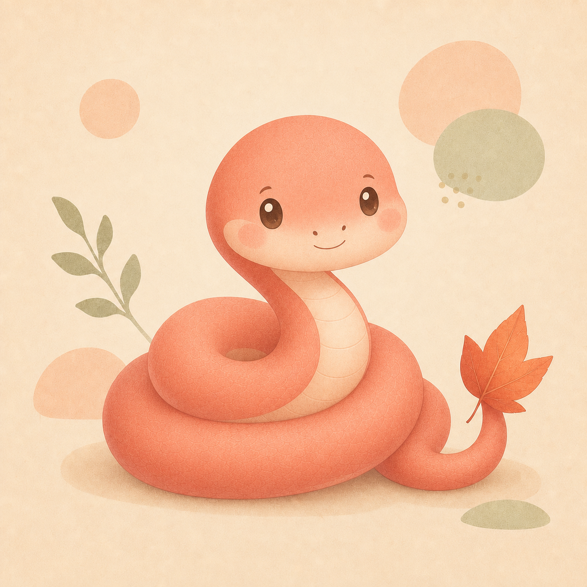

NAME
신상윤
2001년생, 26살.
현재 성수동에 살고 있습니다.
ISTP
임베디드시스템공학
01년생 반가워요!
낯은 조금 가리지만 친해지면 꽤 수다스러워집니다.
여행과 게임, 그리고 집에서 보내는 조용한 시간을 좋아해요.
* 어느 작품의 제목이 살짝 떠오른다면 맞습니다.

ABOUT ME
거창한 설명보다는, 알아두면 친해지기 쉬운 정보들만 모아봤어요.
NAME
2001년생, 26살.
현재 성수동에 살고 있습니다.
MY PACE
계획표를 빼곡히 채우기보다는 그날의 기분과 흐름을 따라가는 편이에요.
COMFORT ZONE
사람들과 보내는 시간도 좋지만, 제대로 충전되는 건 역시 혼자 있을 때.
FIRST → LATER
낯을 조금 가리고
주로 듣는 편
생각보다 말이 많은
은근한 수다쟁이
THINGS I LIKE
좋아하는 이야기를 나누다 보면
생각보다 금방 친해질지도 몰라요.
익숙한 곳을 벗어나 새로운 풍경과 분위기를 만나는 걸 좋아합니다. 최근 여행지는 대만!
주로 하는 게임은 롤.
같이 게임 이야기하는 것도 환영합니다.
덥지도 춥지도 않은 공기. 가장 좋아하는 계절은 가을이고, 여름은 조금 힘들어요.
보고만 있어도 기분이 좋아지는 동물. 밝고 다정한 리트리버를 좋아합니다.
LATELY
최근 사주팔자를 가볍게 찾아보는 재미에 빠졌어요. 제 일주는 정사일주라서, 붉은 뱀 캐릭터도 이 페이지에 데려왔습니다.
NEW INTEREST쉬는 날에는 약속을 꽉 채우기보다 집에서 유튜브를 보며 가만히 쉬는 쪽을 선호합니다.
DAY OFF요즘 가장 확실한 스트레스 해소법. 두 살짜리 조카 영상을 보고 있으면 복잡했던 기분도 금방 풀립니다.
HAPPY MOMENTMINI GAME
둘 중 저에게 더 가까운 답을 골라보세요.
틀려도 전혀 괜찮습니다.
퀴즈를 불러오는 중입니다.
AT SSAFY
지금은 SSAFY에서 배우고 있습니다. 기술 이름을 많이 나열하기보다는, 기본을 단단히 쌓고 사람들과 함께 끝까지 만들어보는 경험을 얻고 싶어요.
기본을
단단하게
함께 만드는
감각 익히기
끝까지 해낸
경험 쌓기
STUDY WITH ME
혼자 공부하는 것도 좋지만, SSAFY에서는 다양한 관심사를 가진 사람들과 꾸준히 배우는 경험을 해보고 싶어요. 가볍게 시작해 오래 이어갈 스터디라면 언제든 환영합니다.